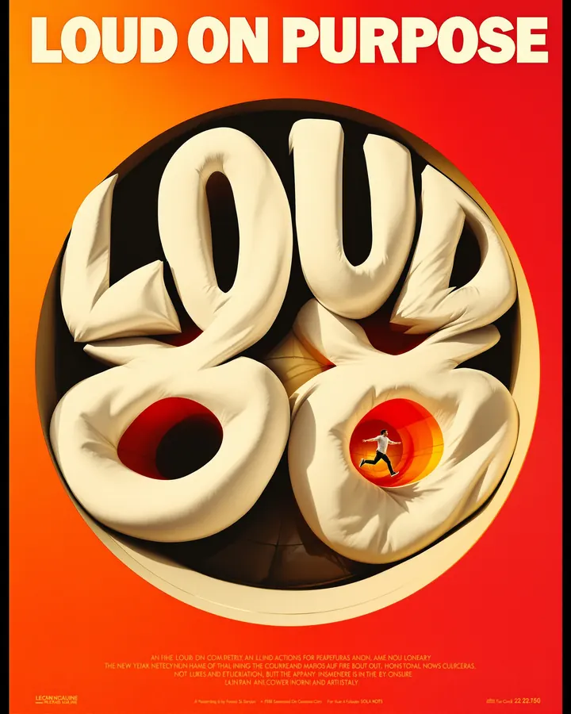
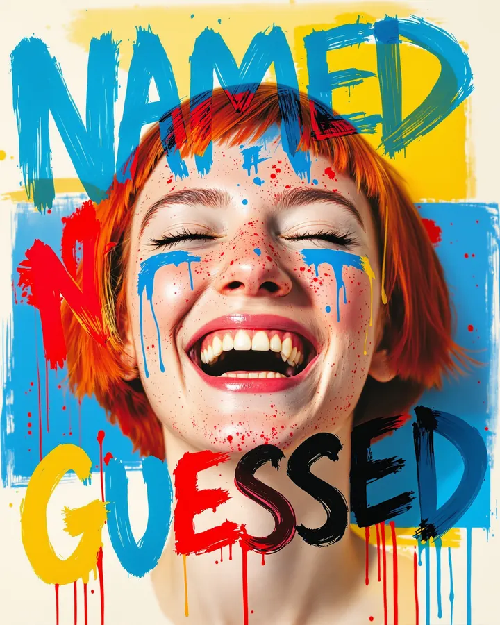
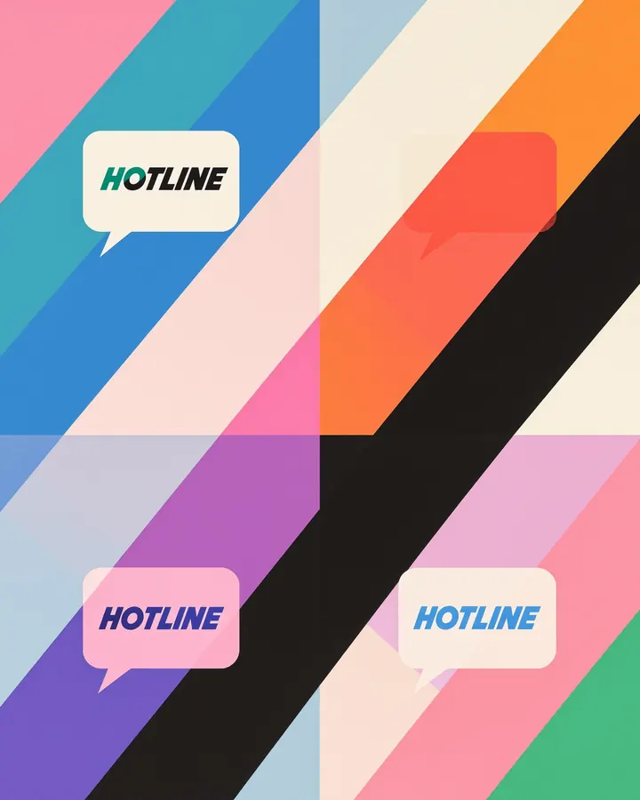
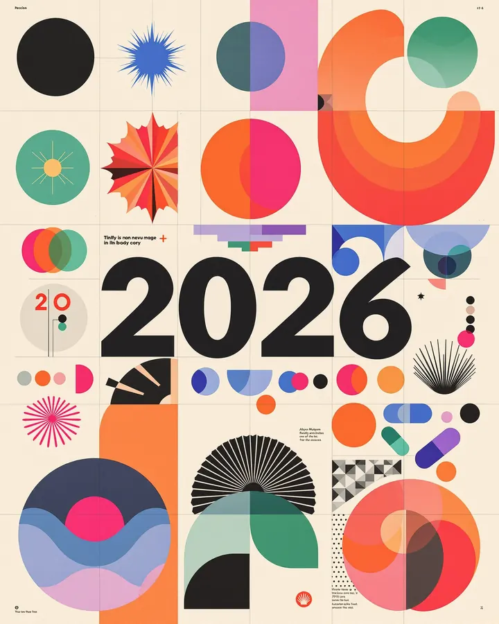

Recreate the loud-type look with Director's Lookbook
Inspired by a post about maximalist type.
Loud, maximalist type is back, and it works best when it is chosen on purpose. Here are four versions of the look. For each one we asked the Lookbook for a hand of named cards, took its prompt as written, and ran it once through an image model. The words are our own.
Image models still misspell. Check the lettering in every frame, and expect to re-roll or set the type yourself on top.
1. Loud type poster
Dense, overlapping type posters with stretched, warped numerals.
The hand
- Trailer Condensed (Type)
- Warped Letter Frame (Film)
- Hot Yellow to Red (Color)
Image prompt
a black type poster reading LOUD ON PURPOSE, the heavy letters warped and stretched around a rounded window that holds a giant bulging number 88. black poster where giant heavy white letters bulge and warp around a rounded window, sunny wide-angle action photo inside the opening, words reading above and below, thin black keyline around the photo. hot gradient colour palette from lemon yellow through orange to fire red, near-black subject, cream lettering, no cool colours. Aspect ratio 4:5.

2. Hand-lettered portrait
A photo portrait with big multicolour brush lettering painted over and around the face.
The hand
- Dry Brush Script (Type)
- Hand-Lettered Portrait (Film)
- Candy Pop Primaries (Color)
Image prompt
a young woman with a short red bob and freckles laughing with her eyes closed, head and shoulders, the painted words NAMED NOT GUESSED. photo portrait with huge brush-painted lettering scrawled over and around the face, rough dry-brush capitals in clashing colours, paint spatter and drips, flat colour blocks behind the head. bold primary colour palette: jet black, bright blue, cherry red and lemon yellow on crisp off-white, flat and high contrast. Aspect ratio 4:5.

3. Maximalist brand kit
One chunky wordmark in a speech-bubble badge, repeated in clashing colourways on a striped ground.
The hand
- Chunky Rounded (Type)
- Maximalist Brand Kit (Film)
- Pink Green Cobalt (Color)
Image prompt
a brand sheet for a made-up phone shop, the wordmark HOTLINE in a speech-bubble badge. brand identity sheet, one chunky heavy wordmark inside a speech-bubble badge, repeated four times in clashing two-colour colourways, badges tilted and overlapping on wide diagonal colour stripes, flat opaque inks. three-colour poster palette: hot pink, emerald green and cobalt blue, each filling whole shapes, black accents, warm cream background, no other hues. Aspect ratio 4:5.

4. Year-in-review grid
A year-in-review grid of geometric tiles: starbursts, pills, a huge numeral, small body copy.
The hand
- Swiss Neo-Grotesque (Type)
- Modular Geometric Poster (Film)
- Magenta Cobalt Emerald (Color)
Image prompt
a year-in-review grid of square tiles: a huge numeral 2026, starbursts, pills and half-circles, small body copy blocks in a few tiles. modular geometric poster: flat circles, half-circles and rounded pill shapes locked to a strict grid, black plus bright flat red, stepped colour echoes, tiny Swiss sans info block in the bottom corner. colour palette of hot magenta blending into orange for the main shapes, cobalt blue and emerald green accents, near-black details, warm cream paper background, no other colours. Aspect ratio 4:5.

Make your own
Type a feeling into the Lookbook, or ask Claude to deal a hand with the Director's Lookbook connector, then swap any card that does not fit. The ready look Loud Type on the home page starts a website in this style.